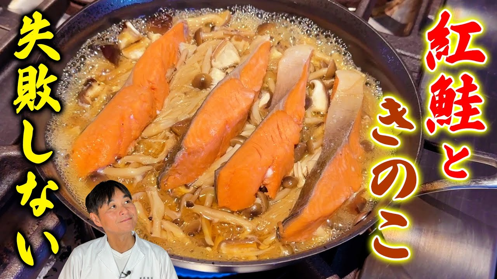

紅鮭ときのこの蒸し煮

材料
- 紅鮭 切り身 2〜４切れ
- しめじ １パック
- 椎茸 ４枚
- えのき 1パック
- 万能ねぎ 適量
- 黒コショウ 少々
- レモン １／４個
A:はちみつおろし酢
- 大根おろし 100g
- 酢 大さじ３
- 醤油 大さじ２
- はちみつ 大さじ２
B:煮汁
- 水 100cc
- 酒 100cc
- 醤油 大さじ１.５
- みりん 大さじ1.5
作り方
- しめじ、椎茸、えのきは石づきを取ってほぐす。
- 紅鮭は水分を拭いてお好みで骨の部分を削ぎ取る
- ボウルでAを混ぜ合わせてはちみつおろし酢を作っておく。
- フライパンにきのこを敷き詰め紅鮭をのせてBを加え中火にかける。沸いたら弱火にして４〜５分蒸し煮にする。
- お皿に盛り付け、万能ねぎ、黒コショウを散らしレモン、はちみつおろし酢を添える
Source: 笠原将弘の料理のほそ道
Back to recipes.